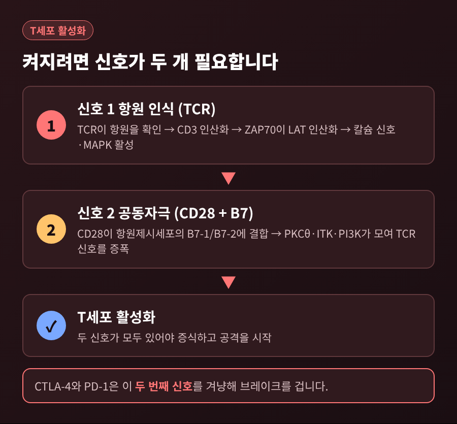
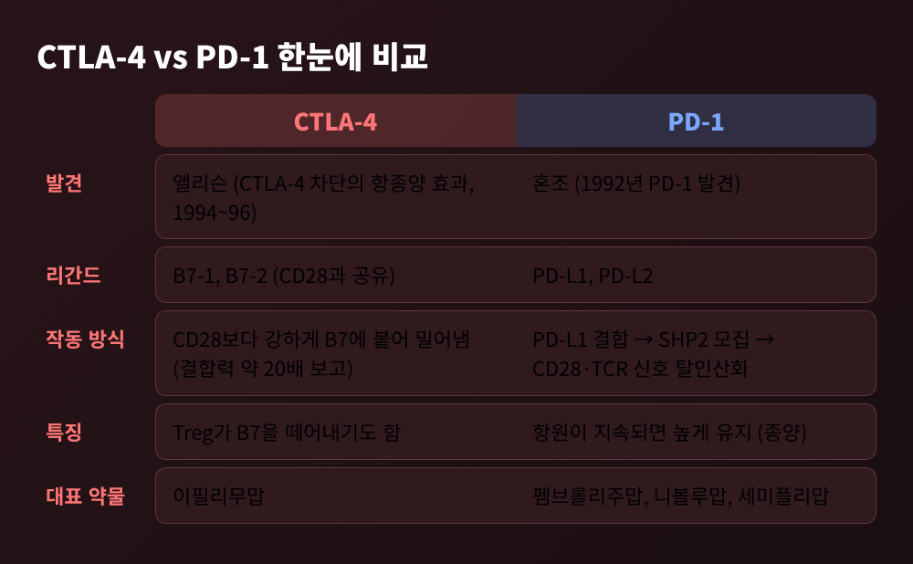
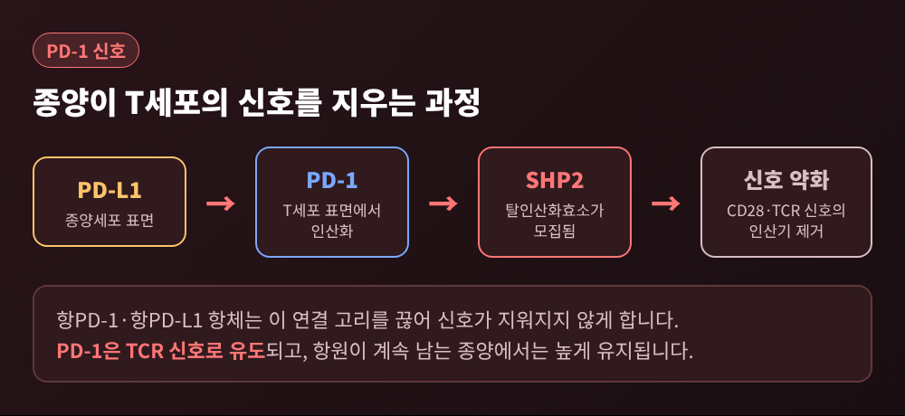
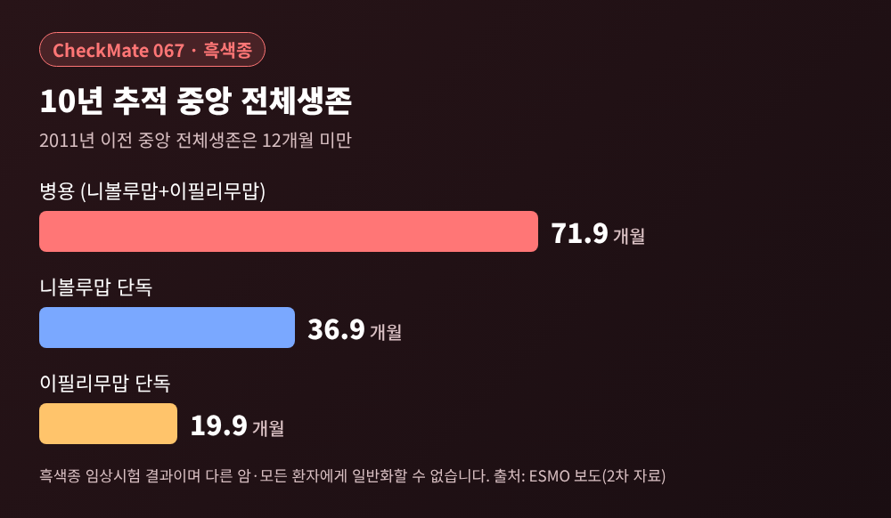
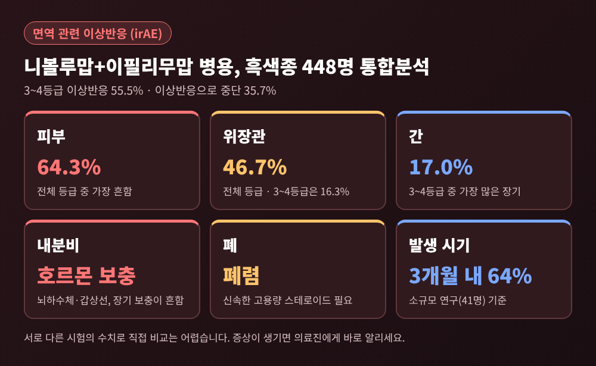

PD-1·CTLA-4 면역관문 기전, T세포 브레이크를 푸는 원리

이번 글에서는 PD-1과 CTLA-4라는 면역관문 분자가 T세포를 어떻게 멈춰 세우는지 정리해 보겠습니다.
면역관문억제제는 이 두 브레이크를 항체로 풀어 T세포가 암세포를 다시 공격하게 하는 약입니다.
2018년 노벨 생리의학상 수상 배경과 브레이크를 풀 때 따라오는 면역 관련 이상반응까지 함께 살펴봅니다.
■ 노벨상이 가리킨 것은 "브레이크를 푼다"는 발상이었습니다
2018년 10월 1일, 노벨 생리의학상은 제임스 앨리슨과 혼조 다스쿠에게 돌아갔습니다.
수상 사유는 “부정적 면역 조절의 억제를 통한 암 치료법의 발견”이었습니다.
두 사람의 접근은 달랐습니다.
앨리슨은 이미 알려진 면역계의 브레이크 단백질 CTLA-4를 풀면 면역세포가 종양을 공격할 수 있다고 보았습니다.
그의 연구실은 1994~1996년 사이 CTLA-4를 막는 항체가 마우스의 종양을 치료하고 지속적인 면역까지 만든다는 것을 보였습니다.
혼조 그룹은 1992년 면역세포 표면에서 새로운 단백질을 찾아냈습니다.
세포자멸(programmed cell death)과 관련이 있을 것으로 여겨 PD-1이라는 이름이 붙었습니다.
이 단백질이 없는 마우스는 처음에는 별 이상이 없다가 나이가 들며 루푸스와 비슷한 자가면역 질환을 보였습니다.
혼조는 여기서 PD-1도 CTLA-4처럼 면역 반응을 누르는 브레이크라고 결론지었습니다.
수술, 방사선, 화학요법에 이어 새로운 암 치료의 축이 열린 순간이었습니다.
■ T세포는 왜 신호가 두 개 필요할까요
브레이크를 이해하려면 먼저 액셀러레이터를 알아야 합니다.
T세포가 켜지려면 두 가지 신호가 필요합니다.
첫째는 T세포 수용체(TCR)가 항원을 알아보는 신호입니다.
TCR 신호가 들어오면 CD3가 인산화되고, ZAP70이 LAT이라는 단백질을 인산화합니다.
LAT은 세포막 위에서 신호의 허브가 되어 칼슘 신호와 세포골격 재편, MAPK 활성을 이끕니다.
둘째는 공동자극 신호입니다.
T세포의 CD28이 항원제시세포의 B7-1, B7-2에 결합하면 PKCθ, ITK, PI3K가 모여 TCR 신호를 거듭니다.
항원 확인과 허가 신호가 모두 있어야 T세포가 제대로 반응하는 구조입니다.

면역관문은 바로 이 두 번째 신호를 겨냥해 브레이크를 겁니다.
■ CTLA-4는 같은 열쇠구멍을 더 세게 붙잡습니다
CTLA-4는 CD28과 똑같은 B7 분자를 리간드로 씁니다.
다만 더 강하게 결합해 CD28을 밀어냅니다.
1991년 B7의 두 번째 수용체로 확인됐을 때, 가용성 CTLA-4가 B7에 붙는 결합력은 CD28의 약 20배로 보고되었습니다.
CTLA-4의 정체는 한동안 논쟁거리였습니다.
CTLA-4가 없는 마우스가 치명적인 T세포 증식 질환을 일으키면서 음성 조절자라는 점이 분명해졌습니다.
흥미로운 점은 위치입니다.
일반 T세포에서 CTLA-4는 대부분 세포 안쪽 소포에 머물다가 TCR 자극을 받으면 표면으로 올라옵니다.
조절 T세포(Treg)는 한 걸음 더 나아가, 항원제시세포의 B7을 아예 떼어내 버립니다.
종양 주변의 Treg는 다른 곳보다 표면 CTLA-4가 높다고 알려져 있습니다.
그래서 항CTLA-4 항체인 이필리무맙은 Treg를 차단하거나 없애는 방식으로 작용한다는 견해가 널리 퍼져 있습니다.
다만 일반 T세포의 CTLA-4를 막는 일이 반응에 얼마나 기여하는지는 아직 알려지지 않았습니다.
기전이 모두 밝혀진 것은 아니라는 점은 짚어 두겠습니다.
■ PD-1은 신호 자체를 지워 버립니다
PD-1은 288개 아미노산으로 이루어진 막단백질입니다.
CD28, CTLA-4와 같은 계열이고, 세포 안쪽 꼬리에 ITIM과 ITSM이라는 두 인산화 부위를 갖습니다.
리간드는 PD-L1과 PD-L2입니다.
PD-L1은 여러 세포에서 발현되며, 종양은 다양한 방식으로 이를 늘립니다.
PD-L1이 붙으면 PD-1이 인산화되고, 탈인산화효소 SHP2(와 SHP-1)가 불려 옵니다.
SHP2는 CD28과 TCR 신호 구성요소의 인산기를 떼어내 T세포의 반응을 약하게 만듭니다.
PD-1은 TCR 신호로 유도됩니다.
항원이 사라지면 기저 수준으로 돌아가지만, 종양처럼 항원이 계속 남아 있으면 높게 유지됩니다.
암세포가 이 점을 이용해 PD-L1을 내세우면, T세포는 눈앞에 적을 두고도 힘을 쓰지 못합니다.

예전에는 면역을 높이는 데만 눈을 두었습니다.
지금은 억제 신호를 끄는 쪽에서 해법을 찾습니다.
■ 두 브레이크를 한눈에 비교하면

표에서 보듯 두 분자는 같은 계열이지만 작동 방식이 다릅니다.
CTLA-4는 B7을 두고 CD28과 겨루는 쪽이고, PD-1은 PD-L1을 만나 SHP2로 신호를 지우는 쪽입니다.
이 차이 때문에 두 약을 함께 쓰면 효과도 부작용도 겹쳐서 커지는 경향이 있습니다.
■ 브레이크를 푼 약들, 그리고 생존 곡선의 변화
이필리무맙은 2011년 FDA와 EMA의 승인을 받았습니다.
근거가 된 3상 시험(2010년 발표)은 이전 치료 뒤 악화된 절제 불가 흑색종 환자 676명을 대상으로 했습니다.
중앙 생존은 이필리무맙 단독 10.1개월, 대조군(gp100 백신) 6.4개월이었습니다.
이어 2014년에는 항PD-1 항체가 등장했습니다.
일본에서 먼저 승인되었고, 같은 해 미국에서 펨브롤리주맙(9월)과 니볼루맙(12월)이 흑색종에 승인되었습니다.
2015년 10월에는 이필리무맙과 니볼루맙 병용도 승인되었습니다.
현재 항PD-1 계열에는 세미플리맙, 항PD-L1 계열에는 아테졸리주맙, 아벨루맙, 더발루맙이 있습니다.
장기 추적 결과는 인상적입니다.
흑색종 3상 CheckMate 067의 10년 추적에서 중앙 전체생존은 병용군 71.9개월, 니볼루맙 단독 36.9개월, 이필리무맙 단독 19.9개월이었습니다.
이필리무맙이 상용화되기 전인 2011년 이전의 중앙 전체생존은 12개월 미만이었습니다.

해석에는 조심이 필요합니다.
이 숫자는 흑색종 임상시험의 결과이고, 앞의 10.1개월과는 대상 환자가 달라 직접 비교할 수 없습니다.
초기 니볼루맙 시험에서는 폐암, 흑색종, 신세포암에서 반응이 나왔지만 대장암과 췌장암은 반응이 없었습니다.
효과가 오래 지속되는 환자는 일부라는 지적도 있습니다.
병용 치료에서는 PD-L1 양성 종양이 반응할 확률이 약 2배였지만, 음성이어도 제한적인 반응이 나타나 절대적인 지표는 아닙니다.
■ 브레이크를 풀면 정상 조직도 영향을 받습니다
T세포의 브레이크는 자가면역을 막는 안전장치이기도 합니다.
이를 풀면 종양만이 아니라 정상 장기를 향해서도 면역이 깨어날 수 있습니다.
이것이 면역 관련 이상반응(irAE)입니다.
피부, 대장, 간, 뇌하수체, 갑상선, 폐가 대표적으로 영향을 받는 장기입니다.
흑색종 환자 448명의 통합분석에서 니볼루맙과 이필리무맙 병용 시 치료 관련 3~4등급 이상반응은 55.5%였고, 이상반응으로 치료를 중단한 비율은 35.7%였습니다.
전체 등급으로는 피부(64.3%)와 위장관(46.7%)이 가장 흔했고, 3~4등급에서는 간(17.0%)과 위장관(16.3%)이 많았습니다.
다른 문헌에서도 병용의 고등급 사건은 55~60%, 항PD-1 단독은 10~20% 수준으로 정리됩니다.
다만 신세포암 시험(CheckMate 214)에서는 3~4등급이 46%로, 암종과 시험에 따라 차이가 있습니다.
약에 따라 양상도 다릅니다.
뇌하수체염은 이필리무맙 5.6%, 항PD-1 0.5~1.1%, 병용 8.8~10.5%로 인용됩니다.
중증 설사와 대장염은 항PD-1에서 8~19%, 항CTLA-4에서 23~33%였습니다.
(이 수치들은 서로 다른 시험을 가져온 것이어서 직접 비교는 어렵습니다.)

시기와 관리도 중요합니다.
소규모 일본 연구에서 병용 시 이상반응의 64%가 3개월 안에 나타났습니다.
중앙 발생 시점은 발진 1.2개월, 갑상선기능항진 1.4개월, 뇌하수체기능저하 2.9개월, 폐렴 4.7개월이었습니다.
대부분의 irAE는 글루코코르티코이드(스테로이드)에 반응하며 6~12주 안에 조절되는 경우가 많다고 보고됩니다.
반면 내분비 이상은 호르몬을 오래 보충해야 하는 경우가 흔합니다.
뇌하수체염은 증상이 미묘하지만 부신 기능부전은 생명을 위협할 수 있어 주의가 필요합니다.
그래서 치료를 받는 동안에는 새로운 증상이 생기면 곧바로 의료진에게 알리는 일이 중요합니다.
정리하면 이렇습니다.
CTLA-4는 B7을 두고 CD28과 경쟁하며 T세포를 멈추고, PD-1은 PD-L1을 만나 SHP2로 신호를 지웁니다.
면역관문억제제는 이 두 브레이크를 풀어 T세포가 일하게 합니다.
그 대가로 정상 조직을 향한 면역 반응이 따라올 수 있습니다.
결국 남는 것은 하나입니다.
“브레이크를 푸는 일은 효과와 위험이 같은 손잡이에 달려 있다.”
효과가 얼마나 오래 이어질지, 누구에게 더 잘 듣는지는 지금도 연구가 이어지고 있습니다.
이 브레이크의 비밀이 다 풀렸느냐고 물으신다면, 아직 절반쯤이라고 답하겠습니다.
이 글은 의학적 조언이 아닌 교양 차원의 설명입니다. 개별 환자의 진단과 치료 결정은 반드시 담당 전문의와 상의하시기 바랍니다.